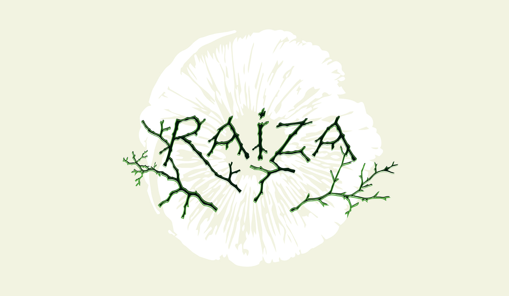

Explora las especies, hábitats y conexiones entre el suelo, las plantas y los hongos del Desierto de los Leones.
DescubreEl suelo
Desierto de los Leones
Es suave y húmedo, con tonos cafés y una pequeña alfombra de musgo y vegetación. Entre raíces, hojas y materia orgánica, el bosque deja pequeñas pistas de todo lo que ocurre bajo nuestros pies.


El suelo funciona como un espacio donde interactúan raíces, hongos, microorganismos, materia orgánica y nutrientes. Dentro de este sistema se desarrollan diferentes tipos de hongos, algunos asociados directamente con las raíces de los árboles y otros encargados de descomponer la materia orgánica.
Plantas, raíces y hongos
Su relación con el suelo
Las raíces establecen asociaciones con hongos (micorrizas) que facilitan la absorción de agua y nutrientes. Los hongos descomponedores reciclan materia orgánica, liberando nutrientes que las plantas pueden utilizar. Juntos forman redes que conectan individuos vegetales y permiten intercambio de recursos —la llamada Wood Wide Web—.
IMAGENES SUBTERRÁNEAS